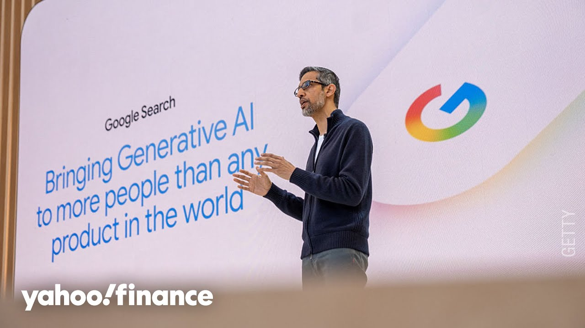

【谷歌I/O大会：从智能眼镜到虚拟试穿】
Summary: The Google I/O conference announced partnerships like Warby Parker, AI-enhanced search features, smart glasses with live translation, and virtual clothing try-ons, showcasing Google's innovation in AI and search.
摘要： 谷歌I/O大会宣布了与Warby Parker等公司的合作、AI增强搜索功能、支持实时翻译的智能眼镜以及虚拟试穿技术，展示了谷歌在AI和搜索领域的创新。

⏱️ Estimated Reading Time: 8 min
The Google IO developer conference kicking off today and some news coming out of it including a partnership with Warby Parker that is sending those shares higher by 16%.
谷歌I/O开发者大会今日开幕，会上传出与Warby Parker合作等消息，推动该公司股价上涨16%。
Joining us on the ground with the latest, Yahoo Finance tech editor Dan Howie.
Yahoo Finance科技编辑Dan Howie在现场为我们带来最新消息。
I know these things can be sort of a fire hose of announcements, but give us some of the high points there, Dan.
我知道这些发布会可能信息量巨大，但Dan，请为我们提炼一些重点。
Yeah, Julia. Fire hose might be underelling it actually.
是的，Julia，说信息量大可能还轻描淡写了。
We saw a ton of announcements from Google today.
我们今天看到谷歌发布了大量公告。
Uh too many to to really recount.
实在太多，难以一一列举。
So, we'll just go over the the top three.
所以我们只讨论前三项。
And the the number one is how Google is kind of evolving search over time.
首先是谷歌如何逐步升级搜索功能。
Uh they're bringing more features to its main search uh uh offering, a new feature called AI mode that they were testing previously, but now is going to be available to all US users.
他们为主搜索功能新增了更多特性，比如此前测试的“AI模式”，现在将面向所有美国用户开放。
And you can think of it kind of as a chat GPT style version of Google search.
你可以将其视为谷歌搜索的ChatGPT风格版本。
They have a deep search where you can do a lot of research.
他们还推出了深度搜索功能，支持更深入的研究。
Uh there there's a number of features uh up top uh with the Google smart glasses and Warby Parker that that's why those shares are changing.
此外，谷歌智能眼镜与Warby Parker的合作等功能是股价变动的原因。
Really what what they're saying here is look we have this this operating system called Android XR.
他们实际传达的是：我们拥有名为Android XR的操作系统。
You can see a a demo of it here.
你可以在此看到演示。
This is where they would be doing live translation which we saw some of on a a demo on stage but uh they they showed off a working version of this during the announcement.
这就是实现实时翻译的功能，我们在台上演示中看到部分效果，但发布会上他们展示了实际运行版本。
Uh it really does seem like an incredible product.
这确实像是一款惊艳的产品。
Uh the the person who was deming it showed off the ability to do this exactly, looking around for directions, uh how it's context aware, things of that nature.
演示者展示了精确功能，比如环顾四周获取导航，以及上下文感知等特性。
Warby Parker, uh Gentle Monster are two of the the the companies that they're going to be working with.
Warby Parker和Gentle Monster是他们的合作企业之一。
Uh as well as uh XRE, uh they have a prototype that they've already shown off or or product that they've already shown off using Android XR.
还有XRE，他们已展示过基于Android XR的原型或产品。
And then we have that agentic AI that that's part of that AI mode where you'll be able to do things like ba basically tell a product uh the the search to go ahead and and look for a specific product for you.
然后是“代理AI”，属于AI模式的一部分，可让你指示搜索为你寻找特定商品。
Uh set up the the price range that you want, the size you want, the color you want, and it'll go ahead and basically buy that for you.
设定价格范围、尺寸和颜色，它就能直接替你购买。
It'll go through the whole process up to the point where you would press purchase and then and then go ahead and do that.
它会完成整个流程，直到你点击购买按钮。
Uh, and then there's also uh this idea of a I just thought it was interesting virtual try on.
另外还有我认为很有趣的虚拟试穿概念。
And so you'd be able to virtually try on clothes that you would see and that that's what you're seeing here where you know I could say okay show me a suit uh in blue.
你可以虚拟试穿看到的衣服，比如我说“展示蓝色西装”。
Oh, I like this one.
哦，我喜欢这件。
Uh let me see if what it would look like on me and then it would be able to do just that.
让我看看上身效果，它就能实现。
We saw a live demo of it as well.
我们还看到了实时演示。
It seems really incredible.
看起来非常惊艳。
I think the the one caveat to point out though is it doesn't get sizing uh uh you know specifically when it comes to showing what it would look like on you.
但需要注意的是，它尚未支持尺码适配，即展示具体上身效果。
So a large versus a medium, you know, depending on your your height and weight.
比如大码和中码，取决于你的身高体重。
Uh so it's not there yet.
目前还做不到。
Uh but when I spoke to Google earlier this week, they said that they're working on those features uh down the line.
但本周早些时候谷歌表示，这些功能正在开发中。
So a huge number of announcements here here at IO.
因此I/O大会发布了大量公告。
really, you know, this is this is Google's attempt to try to reestablish itself or or kind of show that it hasn't lost step in in search or AI.
这实际上是谷歌试图重新确立地位，展示其在搜索和AI领域并未落后。
Yeah, Dan, you're kind of you're kind of leading me where I wanted to head with you, which was the big question, Dan, hanging over the company, and we've talked so much with you about it as well is this question of AI and just what it means for search, Google's bread and butter long term, uh, given these emerging popular alternatives.
Dan，你正好引出了我想探讨的核心问题：面对新兴竞品，AI对谷歌的立身之本——搜索意味着什么？
I know, you know, we've certainly had plenty of of analysts on the show who are bullish on the name and they'll they'll certainly hammer home the point that Google is not standing pat.
我们知道许多分析师看好谷歌，他们强调谷歌并未停滞不前。
They're not, you know, sitting still.
他们没有原地踏步。
They are innovating.
他们在创新。
But I'm just curious high level thoughts.
但我更想听听宏观看法。
What more line of sight you think we got into that very central foundational question today at this conference?
你认为本次大会对这一核心问题提供了哪些新视角？
Yeah. I mean, clearly they're they're moving this this kind of AI mode idea and AI overviews front and center, right?
是的，显然他们将“AI模式”和“AI概览”置于核心位置。
the the AI mode uh is really just it's a rival to chat GPT to perplexity uh those kind of chatbased conversation like search engines that you have.
AI模式实际上是对标ChatGPT、Perplexity等聊天式搜索引擎的竞品。
That's that's where it it looks like Google may want to head.
这似乎是谷歌的发力方向。
Now the other part of that is the agentic AI where uh where I was explaining how it could go through and help you purchase things or or you know uh look up tickets for a Mets game for instance.
另一部分是“代理AI”，比如协助购物或查询大都会队比赛门票。
You would be able to go through and find the price that you want that would be able to find those for you.
它能按你的预算找到目标商品。
So, it's these skill kind of elements that Google is really leaning into kind of to to get away from, not necessarily get away from, but to show that it's advancing beyond just the standard search box.
谷歌正通过这些技能型功能，展示其已超越传统搜索框。
I think, you know, that leads uh to the question, okay, well, what does that mean for companies that depend on Google for those blue links for, you know, uh whether it's uh page views or surfacing relevant information, you know, uh AI mode?
这引发另一个问题：依赖谷歌蓝链获取流量或曝光的企业（如Yelp）会受AI模式什么影响？
uh one of the demos they showed with looking for restaurants.
比如他们演示的餐厅搜索功能。
What does that mean for companies like Yelp and and beyond that?
对Yelp等公司意味着什么？
Thanks so much, Dan. Appreciate it.
非常感谢Dan。